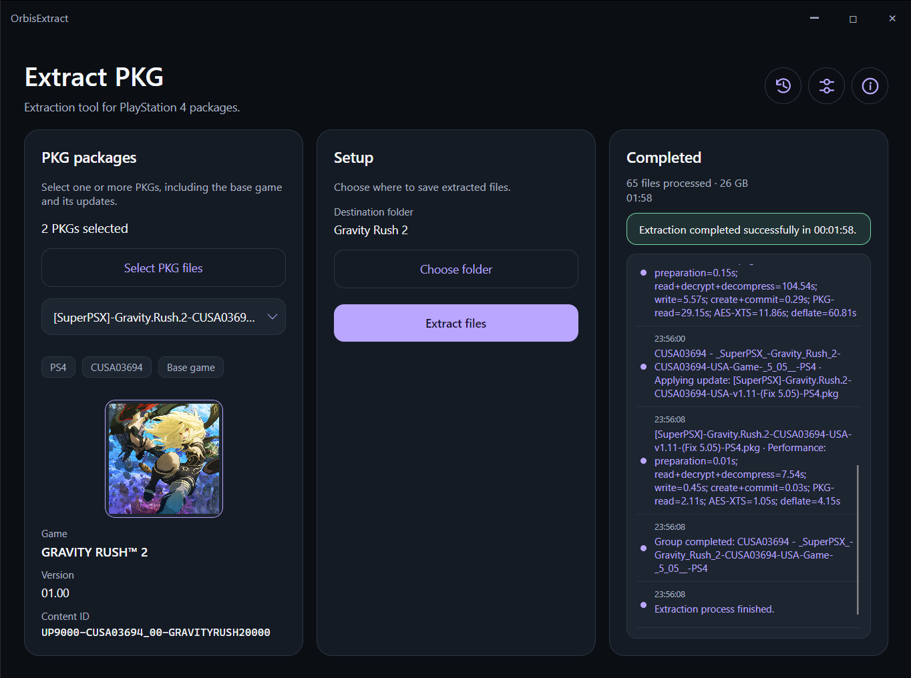
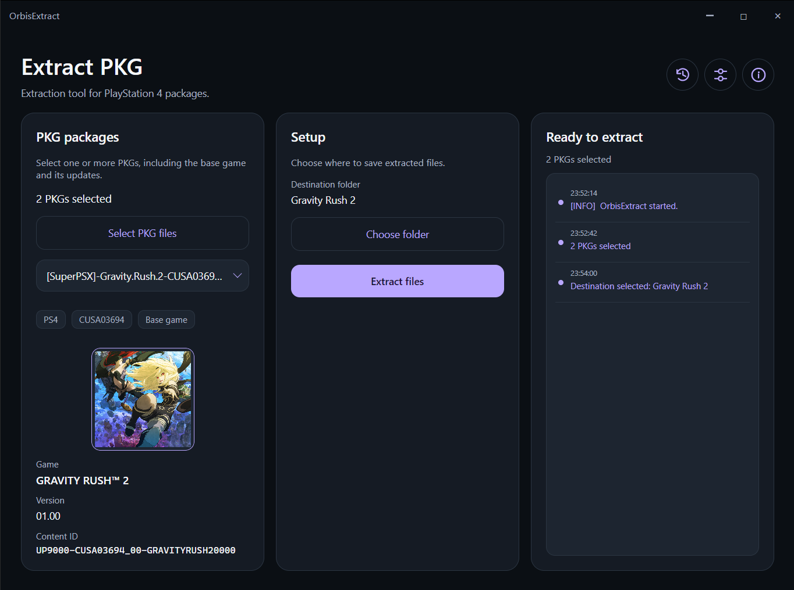
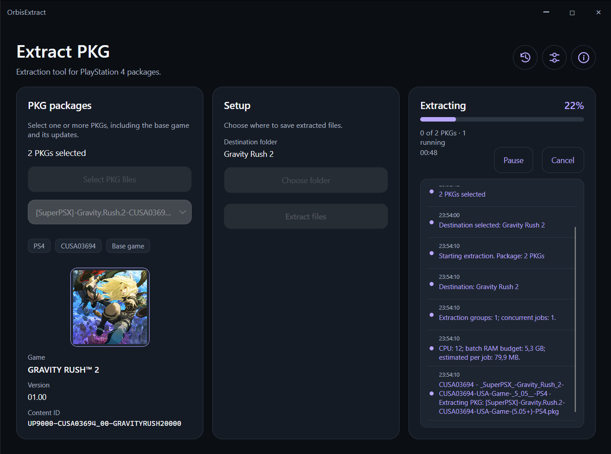
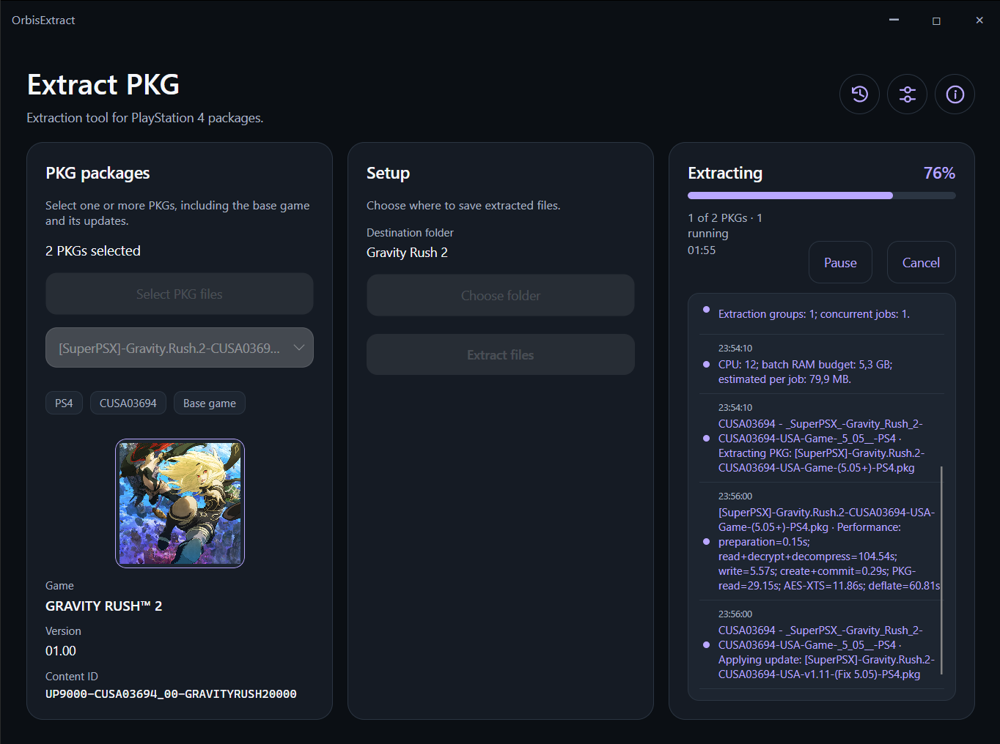

[PKG]
Select your dump
Open your game PKG and check its title, version and available embedded artwork.
PlayStation 4 game extractor
OrbisExtract extracts the contents of PS4 game PKGs from dumps you made of your own games. Select a package and save its files to a folder on Windows, Linux or Android.
Have your game dump in PKG format and enough free space for its extracted contents. OrbisExtract reads the package; it does not dump games from your console.
Open your game PKG and check its title, version and available embedded artwork.
Choose where to save the extracted contents. On Android, select files and the folder through the system picker.
Start extraction and follow its progress. Pause, cancel or check the log and local history.
On Windows, OrbisExtract extracted the US base game (CUSA03694) and applied update 1.11 to the same output in one run.




The extracted files ran successfully in GRport for Gravity Rush 2 and in a separate port for God of War III. Results apply to the tested packages and port builds only.
See the package details on GitHubGet the published version from GitHub. Official downloads and version-specific release notes are available on the releases page.
Google Play: publication is being prepared. Until the app is available in the store, use the official GitHub release.
Development builds may include unreleased features. Downloading their artifacts requires a GitHub account.
Files and connectivity
Package reading and extraction happen on your device. The project does not receive your PKG contents.
Artwork search may query Wikimedia Commons using the game title. Update checks contact GitHub. These services receive normal connection information.
Read the privacy policyBefore you start
No. The app extracts PKGs from dumps you made of your own PS4 games. You need to obtain your dump separately. OrbisExtract does not dump games from your console, download games or emulate a PS4.
No. Compatibility depends on the package format and protection. Protected packages may not be extractable. Check release notes and keep your original files.
Local file selection and extraction work offline. Update checks, online artwork and cloud storage providers may require connectivity.
For GitHub APKs, install the new official APK over the existing installation with a compatible signature and a versionCode that is not lower. Future Play installations will be updated by the store. Switching between channels can require reinstallation if signatures differ.
Version 1.0.5 includes parallel extraction groups and ordered application of compatible update packages over a base. Availability depends on your installed version. Binary delta updates are outside this workflow; check the documentation first.
Report a problem, ask a question or contact the maintainer.